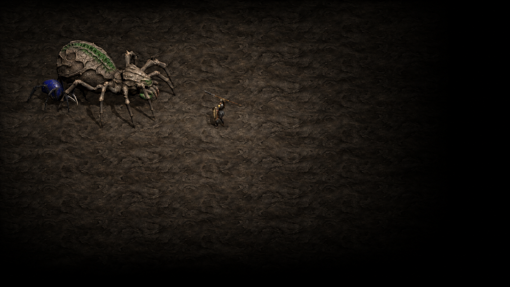
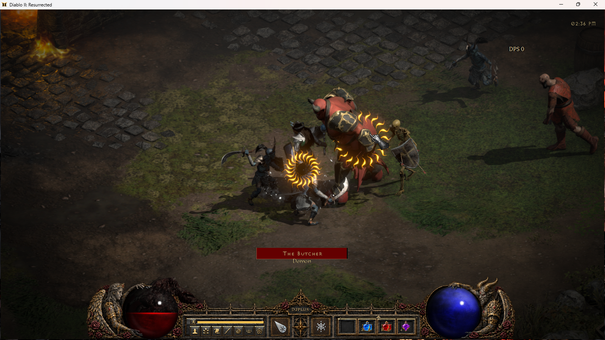
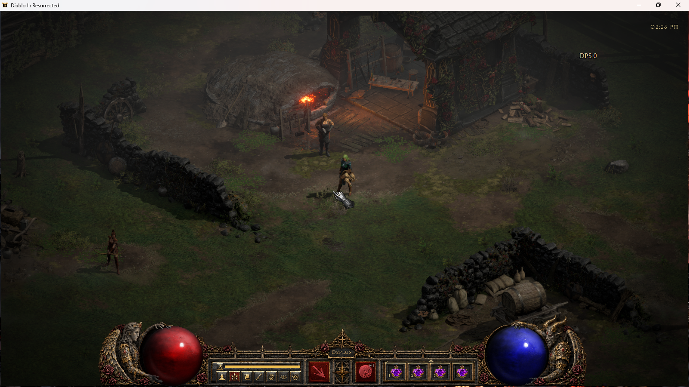
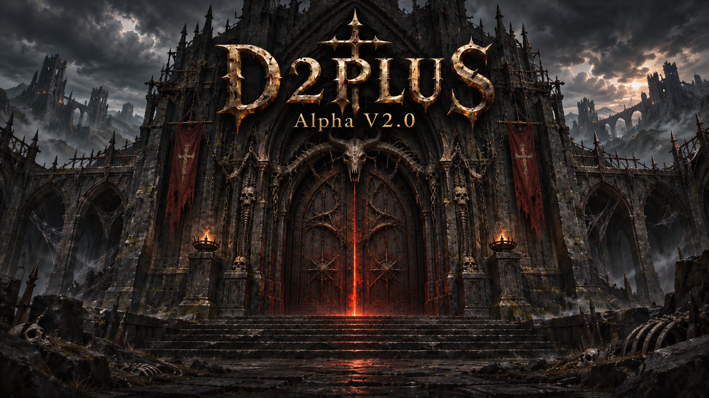
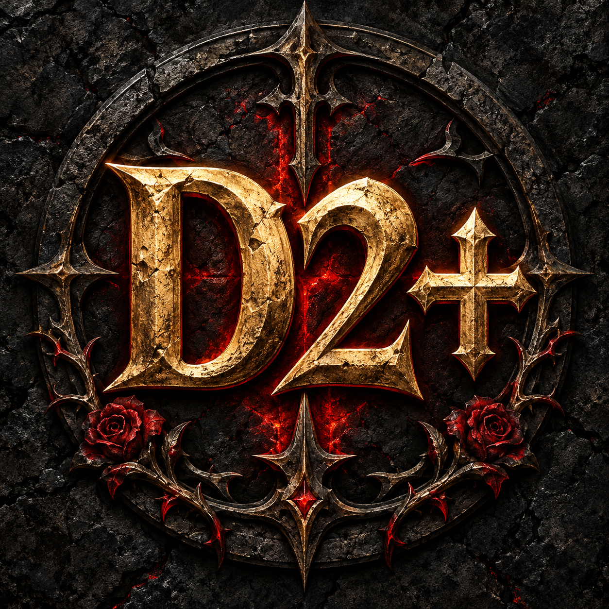

More ways to build
Reworked skills, new passives and stronger build options give every class fresh ways to fight.
DIABLO II: RESURRECTED · OFFLINE OVERHAUL MOD
Evil endures. The adventure continues.
ALPHA V2.0The Diablo II you love, with more ways to build your hero and more reasons to keep playing.
Reworked skills, new passives and stronger build options give every class fresh ways to fight.
Discover custom uniques with varied rolls, powerful class sets, crafting recipes and companion trinkets.
Keep progressing through endgame gear hunts, collection goals and tougher encounters beyond the campaign.
Face Lilith beside Mephisto, Azmodan, The Butcher and an Uber Butcher, brought to life with custom models and attacks.
Adventure with custom mercenaries, including cow warriors and spellbook-wielding sorcerers.
Explore gothic towns, snowy Harrogath and a redesigned Arcane Sanctuary, with a rose-adorned HUD and custom character visuals.
Spend Elder Gems to give an eligible unique one or two extra powers. Failure turns equipment into a rare; a unique Grand Charm becomes magic. Learn the ritual →
Find builds, recipes and eligible boss farming routes in the wiki and Android companion.
Play offline. Install everything through the Windows launcher or as one standalone D2RMM mod.
Our short guide covers installation, save backups, optional melee splash, material storage and Accursed rituals.
Read Getting StartedFind the right download, plan your first dungeon, or check what changed for your class.
Choose D2RMM or the Windows launcher, check the game requirements and keep your offline saves on the same path.
Find Gloamweb, the Nightmare Sanctum and The Cinderwound. Compare entry recipes, difficulty tiers and reward bags.
Learn the seven-bolt milestones, Warlock passive rules and the newly completed skill roles.
Explore the custom bosses, dungeons and familiar places in Alpha V2.0.



ALPHA V2.0 ·

Descend into optional dungeons, face polished custom bosses, and try finished skill roles across eight classes. A complete mod, updated launcher and current reference tools keep everything together.
ALPHA V1.4 ·
Explore the Sanctum of the Shattered Sun, challenge The Last Sunkeeper and hunt for new Dungeon Reward Bags. This complete update also brings stronger high-end custom runewords, new equipment looks and refreshed reference tools.
ALPHA V1.3 ·
Your charms can total 50 weight points before penalties begin. That is combined weight, not 50 charms: magic Small / Large / Grand Charms weigh 1 / 2 / 3, most unique charms weigh 5, and crafted Oaths weigh 7. Check Advanced Character Stats for your total. Seven new craftable Oaths share an aura with you and nearby allies, including your mercenary.
How charm weight works and what is new → · Oath recipes and exact bonuses →
ALPHA V1.2.2 ·
The controller HUD has a new dark gothic stone look, improved potion alignment and stash navigation, and a cleaner inventory surround.
The launcher now shows your character-save folder and includes quick save backups. There is also a short Getting Started guide and an updated Alpha V1.2.2 splash. Your existing characters can keep playing.
ALPHA V1.2 · 20 OCT 2026
Lilith, Daughter of Hatred now fights alongside Mephisto on all three difficulties. We have also cleaned up Azmodan’s animations and fixed Mephisto targeting. Read the Alpha V1.2 patch notes below.
PLAYER TIP · 19 OCT 2026
Want melee splash damage? Buy the optional melee splash charm from Gheed in Act I and keep it in your character’s inventory to enable the effect. Move it to your stash to turn it off.
ALPHA V1.1.2 · 19 OCT 2026
The first 1.1.2 upload was our working installed snapshot. The proper standalone D2RMM package is now available, and the Windows launcher has been updated to 1.1.2 with the same gameplay files. Grab your preferred download below and you’re ready to go.
ALPHA V1.1.2 · 18 OCT 2026
Alpha V1.1.2 is ready! This update fixes clipped item artwork and missing equipped models, tidies up Accursed tooltips and sigil storage, and adds a few finishing touches to the interface. Your existing gear keeps its stats and rolls.
ALPHA V1.1 HOTFIX 1
This small update restores Ritual Sigil names and the violet Accursed label. The character-selection frames are slimmer, with the side figures removed. Grab the updated complete mod or Windows launcher, then reinstall with the same mod folder and save path.
The Android companion stays on Alpha V1.1. No character reset is needed.
ALPHA V1.1
Alpha V1.1 is here! Uniques now have more varied rolls, clearer names and new artwork for the highest tiers. Diablo I relics get a little love, and finding that perfect drop takes a bit more hunting.
Try the new Accursed ritual, explore the visual updates, and find current farming routes in the wiki. Everything is bundled into one complete download.
Release notes →New to modding? Start with the Windows launcher installer. It includes the complete gameplay files, wiki and hero editor. Experienced D2RMM users can choose the separate all-in-one mod.
The complete Alpha V2.0 experience, in one D2RMM mod. No earlier release or separate add-ons required.
Download full modAlpha V2.0 installer with the complete gameplay snapshot, guided setup, wiki and hero editor.
Download installerExtract the entire archive and keep its files together.
Download portable ZIPAlpha V2.0 items, builds, charm weight, all seven Oaths and the Accursed guide, available offline.
Download offline wiki
Signed Alpha V2.0 APK with the current offline reference. Existing signed v0.8 and later installations update in place. Older v0.7 installations use a different signing key; see the release notes before upgrading.
Download Android APKRead the changes, checksums, credits and known limitations.
Source & release notesAlpha V2.0 prerelease · Read the release notes before installing.
Download and run the Alpha V2.0 installer. Your offline wiki, hero editor and complete gameplay package are included.
In Setup, browse to D2R.exe, then click Install Alpha V2.0. Close D2R first. The launcher configures the mod folder and launch arguments, and retains the previous mod output as a backup. If Windows denies access to the game folder, reopen the launcher using Run as administrator.
Click Launch D2PLUS and select an offline character. Existing players should retain their previous output folder name so their characters stay available.
Extract the Complete D2RMM ZIP into the D2RMM application’s mods folder. Enable D2PLUS - Alpha V2.0 Complete, disable older complete D2PLUS bundles and included test add-ons, then click Install Mods. This release is a fixed-settings snapshot.
Requires your own copy of Diablo II: Resurrected. Back up your offline characters before testing an alpha release.
Keep your game paths and additional launch arguments. Choose whether to reroll offline maps.
Open the offline wiki and hero editor in their own windows, with current item data.
Enable the companion overlay when desired. Its original compatibility checks remain in place.
Current packaged names, unlocks and descriptions for all eight classes. Hard points and total skill levels can scale different bonuses; follow each skill tooltip. Encounter and build benchmarks remain open to live testing.
| Skill | Unlock / ranks | Current behavior |
|---|---|---|
| Critical Strike | Level 1 · 20 ranks | passive - your attacks have a chance to do double damage |
| Fire Arrow | Level 1 · 20 ranks | magically enhances your arrows or bolts with fire |
| Inner Sight | Level 1 · 20 ranks | illuminates nearby enemies making them easier to hit for you and your party |
| Jab | Level 1 · 20 ranks | attacks with a series of rapid thrusts using a javelin or spear class weapon |
| Magic Arrow | Level 1 · 20 ranks | creates a magical arrow or bolt that does extra damage |
| Cold Arrow | Level 6 · 20 ranks | magically enhances your arrows or bolts by adding cold damage and a slowing effect cold arrows only do half of their regular damage |
| Dodge | Level 6 · 20 ranks | passive - you have a chance to dodge a melee attack when attacking or standing still |
| Hunters Discipline | Level 6 · 5 ranks | +12% Attack Rating per rank. Maximum 5 ranks. Always active; affects the owner unless stated otherwise. |
| Multiple Shot | Level 6 · 20 ranks | magically splits one arrow or bolt into many |
| Poison Javelin | Level 6 · 20 ranks | magically enhances your javelin to leave a trail of poison clouds |
| Storm Lance | Level 6 · 20 ranks | Release a wider fan of lightning bolts. +2 bolts at skill levels 10, 20 and 30 (max 7). Adds 50% weapon damage to primary bolts. Bolts stun eligible targets for 0.24 seconds. On impact: chains up to 3 times. Chain damage: 25% skill lightning. |
| Avoid | Level 12 · 20 ranks | passive - you have a chance to dodge enemy missiles when attacking or standing still |
| Exploding Arrow | Level 12 · 20 ranks | enchants an arrow or bolt that explodes on contact, damaging all nearby enemies |
| Impale | Level 12 · 20 ranks | increases attack damage but rapidly degrades the weapon |
| Lightning Bolt | Level 12 · 20 ranks | magically converts your javelin into a bolt of lightning |
| Slow Missiles | Level 12 · 20 ranks | illuminates nearby enemies and slows their ranged attacks |
| Thread the Needle | Level 12 · 5 ranks | +2 percentage points of missile piercing chance per rank. Maximum 5 ranks. Always active; affects the owner unless stated otherwise. |
| Charged Strike | Level 18 · 20 ranks | adds lightning damage to javelin and spear class weapons and releases charged bolts upon impact |
| Guided Arrow | Level 18 · 20 ranks | enhances your arrows and bolts to track your target or seek one of its own |
| Ice Arrow | Level 18 · 20 ranks | magically enhances your arrow or bolt to freeze your enemies |
| Penetrate | Level 18 · 20 ranks | passive - increases your attack rating |
| Plague Javelin | Level 18 · 20 ranks | magically enhances your javelin to release expanding clouds of poison upon impact |
| Decoy | Level 24 · 20 ranks | creates a duplicate of yourself that draws fire from enemies |
| Evade | Level 24 · 20 ranks | passive - you have a chance to dodge a melee or missile attack when walking or running |
| Fend | Level 24 · 20 ranks | attacks all adjacent targets |
| Immolation Arrow | Level 24 · 20 ranks | enhances arrows or bolts to cause severe fire damage and creates a pyre upon impact |
| Storm Conduit | Level 24 · 5 ranks | +2% Lightning Skill Damage per rank. Maximum 5 ranks. Always active; affects the owner unless stated otherwise. |
| Strafe | Level 24 · 20 ranks | magically splits one arrow into several that target multiple nearby enemies |
| Freezing Arrow | Level 30 · 20 ranks | magically enhances an arrow or bolt to freeze entire groups of monsters |
| Lightning Fury | Level 30 · 20 ranks | changes a thrown javelin into a powerful bolt of lightning that splits on impact |
| Lightning Strike | Level 30 · 20 ranks | adds lightning damage to javelin and spear class weapons and releases chain lightning upon impact |
| Pierce | Level 30 · 20 ranks | passive - your missiles have a chance to pass through enemies that they hit |
| Valkyrie | Level 30 · 20 ranks | summons a powerful Valkyrie ally |
| Skill | Unlock / ranks | Current behavior |
|---|---|---|
| Charged Bolt | Level 1 · 20 ranks | creates multiple, randomly directed bolts of electrical energy |
| Fire Bolt | Level 1 · 20 ranks | creates a magical flaming missile |
| Frozen Armor | Level 1 · 20 ranks | increases your defense and freezes enemies that hit you |
| Ice Bolt | Level 1 · 20 ranks | creates a magical bolt of ice that damages and slows your enemies |
| Warmth | Level 1 · 20 ranks | passive - increases the rate at which you recover mana |
| Frost Nova | Level 6 · 20 ranks | creates an expanding ring of ice that damages and slows all nearby enemies |
| Ice Blast | Level 6 · 20 ranks | creates a magical sphere of ice that damages and freezes your enemy |
| Inferno | Level 6 · 20 ranks | creates a continuous jet of flame to scorch your enemies |
| Static Field | Level 6 · 20 ranks | creates an electrical field that reduces life of all nearby enemies |
| Telekinesis | Level 6 · 20 ranks | uses the power of your mind to pick up items, use objects, and knock back enemies |
| Blaze | Level 12 · 20 ranks | creates a wall of fire in your wake to scorch your enemies |
| Emberguard | Level 12 · 5 ranks | +8% Defense per rank. Maximum 5 ranks. Always active; affects the owner unless stated otherwise. |
| Fire Ball | Level 12 · 20 ranks | creates an explosive sphere of fiery death to engulf your enemies |
| Lightning | Level 12 · 20 ranks | creates a powerful lightning bolt to lay waste to your enemies |
| Nova | Level 12 · 20 ranks | creates an expanding ring of lightning to shock nearby enemies |
| Shiver Armor | Level 12 · 20 ranks | increases your defense freezes and damages enemies that hit you |
| Static Reservoir | Level 12 · 5 ranks | +8% Mana Regeneration per rank. Maximum 5 ranks. Always active; affects the owner unless stated otherwise. |
| Chain Lightning | Level 18 · 20 ranks | creates a bolt of lightning that arcs through several targets |
| Enchant | Level 18 · 20 ranks | enchants equipped weapon of targeted character or minion adds fire damage to all weapons |
| Fire Wall | Level 18 · 20 ranks | creates a wall of flame that burns nearby enemies |
| Glacial Spike | Level 18 · 20 ranks | creates a magical ice comet that freezes or kills nearby enemies |
| Teleport | Level 18 · 20 ranks | instantly moves to a destination within your line of sight |
| Arcane Tempest | Level 24 · 20 ranks | A brief storm follows you and strikes a nearby enemy. Each strike splashes lightning damage in a small radius. One impact per target per strike; recasting refreshes it. |
| Blizzard | Level 24 · 20 ranks | summons massive shards of ice to destroy your enemies |
| Chilling Armor | Level 24 · 20 ranks | increases defense and discharges an ice bolt in retaliation against ranged attackers |
| Energy Shield | Level 24 · 20 ranks | creates a magical shield that consumes mana instead of health when you take damage |
| Meteor | Level 24 · 20 ranks | summons a meteor from the heavens to crush and incinerate your enemies |
| Wintercraft | Level 24 · 5 ranks | +2% Cold Skill Damage per rank. Maximum 5 ranks. Always active; affects the owner unless stated otherwise. |
| Cold Mastery | Level 30 · 20 ranks | passive - increases the damage of your cold spells by piercing enemies' resistances to cold |
| Fire Mastery | Level 30 · 20 ranks | passive - increases all damage caused by your fire spells |
| Frozen Orb | Level 30 · 20 ranks | creates a magical globe that sprays a torrent of ice bolts to lay waste to your enemies |
| Hydra | Level 30 · 20 ranks | summons a multi-headed beast of flame to reduce your enemies to ashes |
| Lightning Mastery | Level 30 · 20 ranks | passive - increases all damage caused by your lightning spells |
| Skill | Unlock / ranks | Current behavior |
|---|---|---|
| Amplify Damage | Level 1 · 20 ranks | curses a group of enemies, increasing the non-magic damage they receive |
| Bone Armor | Level 1 · 20 ranks | creates an orbiting shield of bone that absorbs melee damage |
| Raise Skeleton | Level 1 · 20 ranks | cast on the corpse of a slain monster, this raises a skeleton warrior that fights for you |
| Skeleton Mastery | Level 1 · 20 ranks | passive - increases life and damage of raised skeletons and revived creatures |
| Teeth | Level 1 · 20 ranks | fires a barrage of summoned barbed teeth |
| Clay Golem | Level 6 · 20 ranks | creates a golem from the earth to fight by your side |
| Corpse Explosion | Level 6 · 20 ranks | cast on the corpse of a slain monster, it explodes, damaging nearby enemies |
| Dim Vision | Level 6 · 20 ranks | curses a group of monsters, reducing their vision radius |
| Grave Meditation | Level 6 · 5 ranks | +8% Mana Regeneration per rank. Maximum 5 ranks. Always active; affects the owner unless stated otherwise. |
| Poison Dagger | Level 6 · 20 ranks | adds poison to your dagger attacks |
| Soul Harvest | Level 6 · 20 ranks | Keep selected on right click to recover life and mana from nearby corpses and improve your mana regeneration. Consumes corpses. Benefits only you; no stored soul stacks. |
| Bone Wall | Level 12 · 20 ranks | creates an impassable barrier of bone and debris |
| Golem Mastery | Level 12 · 20 ranks | Enhances Speed and Life of all your Golems |
| Iron Maiden | Level 12 · 20 ranks | curses a group of enemies, causing them to damage themselves when damaging others |
| Raise Skeletal Mage | Level 12 · 20 ranks | cast on the corpse of a slain monster, this raises a skeleton mage that fights for you |
| Terror | Level 12 · 20 ranks | curses a group of monsters, causing them to flee in terror |
| Blood Golem | Level 18 · 20 ranks | creates a golem that shares with you the life it steals |
| Bone Spear | Level 18 · 20 ranks | summons a deadly spike of bone to impale your enemies |
| Confuse | Level 18 · 20 ranks | curses a monster to force it to attack random targets |
| Life Tap | Level 18 · 20 ranks | curses a group of monsters so that damaging them gives the attacker life |
| Poison Explosion | Level 18 · 20 ranks | cast on the corpse of a slain monster, toxic gas is released that poisons nearby monsters |
| Attract | Level 24 · 20 ranks | curses a monster to become the target of all nearby monsters this curse may not be overridden by another curse |
| Bone Prison | Level 24 · 20 ranks | creates a barrier of fossilized bone around your target |
| Deathless Covenant | Level 24 · 5 ranks | +2 percentage points of Summon Resistance per rank. Maximum 5 ranks. Always active; affects the owner unless stated otherwise. |
| Decrepify | Level 24 · 20 ranks | curses a group of enemies to make them slow, weak and take amplified damage |
| Iron Golem | Level 24 · 20 ranks | transforms a metallic item into a golem that gains the properties of the item |
| Summon Resist | Level 24 · 20 ranks | passive - increases the resistances of all summoned creatures |
| Venom Lore | Level 24 · 5 ranks | +2% Poison Skill Damage per rank. Maximum 5 ranks. Always active; affects the owner unless stated otherwise. |
| Bone Spirit | Level 30 · 20 ranks | releases a spirit of the restless undead that tracks its target or finds one of its own |
| Fire Golem | Level 30 · 20 ranks | creates a golem that converts the damage it receives from fire into life |
| Lower Resist | Level 30 · 20 ranks | curses an enemy to take more damage from all magical attacks lowers resistances of monsters lowers maximum resistances of hostile players |
| Poison Nova | Level 30 · 20 ranks | emits an expanding ring of concentrated poison |
| Revive | Level 30 · 20 ranks | returns a monster to life to fight by your side |
| Skill | Unlock / ranks | Current behavior |
|---|---|---|
| Might | Level 1 · 20 ranks | when active, aura increases the damage done by you and your party |
| Prayer | Level 1 · 20 ranks | when active, aura slowly regenerates the life of you and your party |
| Resist Fire | Level 1 · 20 ranks | when active, aura decreases fire damage done to you and your party |
| Sacrifice | Level 1 · 20 ranks | increased accuracy and damage at the cost of life |
| Smite | Level 1 · 20 ranks | temporarily stun your enemy by bashing it with your shield |
| Defiance | Level 6 · 20 ranks | when active, aura increases the defense of you and your party |
| Holy Bolt | Level 6 · 20 ranks | a bolt of divine energy that damages demons and undead or heals allies |
| Holy Fire | Level 6 · 20 ranks | when active, aura damages nearby enemies with heavenly flames adds fire damage to your attack |
| Measured Strikes | Level 6 · 5 ranks | +12% Attack Rating per rank. Maximum 5 ranks. Always active; affects the owner unless stated otherwise. |
| Resist Cold | Level 6 · 20 ranks | when active, aura decreases cold damage done to you and your party |
| Thorns | Level 6 · 20 ranks | when active, aura reflects melee damage taken by you and your party back at your enemies |
| Blessed Aim | Level 12 · 20 ranks | when active, aura increases the attack rating for you and your party |
| Charge | Level 12 · 20 ranks | charge into battle and attack an enemy |
| Cleansing | Level 12 · 20 ranks | when active, aura reduces the length of time you and your party will remain poisoned or cursed |
| Purity of Blood | Level 12 · 5 ranks | +5 percentage points of Poison Resistance per rank. Maximum 5 ranks. Always active; affects the owner unless stated otherwise. |
| Resist Lightning | Level 12 · 20 ranks | when active, aura decreases lightning damage done to you and your party |
| Zeal | Level 12 · 20 ranks | allows you to attack multiple adjacent enemies with a single attack |
| Blessed Hammer | Level 18 · 20 ranks | summons an ethereal hammer that spirals outwards damaging enemies it hits |
| Concentration | Level 18 · 20 ranks | when active, aura increases the damage and decreases the chance that the attack will be interrupted for you and your party |
| Holy Freeze | Level 18 · 20 ranks | when active, aura freezes nearby monsters adds cold damage to your attack |
| Vengeance | Level 18 · 20 ranks | fire, lightning and cold damage are added to each successful attack |
| Vigor | Level 18 · 20 ranks | when active, aura increases stamina recovery rate, maximum stamina and movement speed for you and your party |
| Holy Shield | Level 24 · 20 ranks | enhances your shield with divine power |
| Holy Shock | Level 24 · 20 ranks | when active, aura causes pulses of electricity to damage nearby enemies adds lightning damage to your attack |
| Judgment | Level 24 · 20 ranks | Call down a column of magic on an enemy. The impact sends holy bolts toward nearby enemies. Each bolt strikes one enemy; magic immunities still apply. |
| Meditation | Level 24 · 20 ranks | when active, aura increases mana recovery for you and your party |
| Sanctuary | Level 24 · 20 ranks | when active, aura damages the undead and knocks them back |
| Storm Zeal | Level 24 · 5 ranks | +2% Lightning Skill Damage per rank. Maximum 5 ranks. Always active; affects the owner unless stated otherwise. |
| Conviction | Level 30 · 20 ranks | when active, aura reduces the defenses and resistances of nearby enemies |
| Fanaticism | Level 30 · 20 ranks | when active, aura increases damage, attack speed and attack rating for you and your party |
| Fist of the Heavens | Level 30 · 20 ranks | lightning strikes your target as holy bolts seek out nearby enemies |
| Redemption | Level 30 · 20 ranks | when active, aura attempts to redeem the souls of slain enemies to give you life and mana |
| Salvation | Level 30 · 20 ranks | when active, aura decreases fire, cold and lightning damage done to you and your party |
| Skill | Unlock / ranks | Current behavior |
|---|---|---|
| Arms Master | Level 1 · 20 ranks | Passive: increases physical attack damage, attack rating, and critical strike chance with all weapon types. |
| Bash | Level 1 · 20 ranks | powerful blow that increases the damage done to enemies and knocks them back |
| Blood Thirst | Level 1 · 20 ranks | Passive: grants life stolen per hit and increased maximum life. |
| Find Potion | Level 1 · 20 ranks | use on the corpse of a slain monster for a chance to find a potion |
| Howl | Level 1 · 20 ranks | sends nearby monsters scrambling away in fear |
| Primal Weapon Mastery | Level 1 · 20 ranks | Channel elemental and supernatural power through any weapon. Increases elemental, poison, and magic damage; improves attack rating and pierces resistances. |
| Battle Instinct | Level 6 · 5 ranks | +12% Attack Rating per rank. Maximum 5 ranks. Always active; affects the owner unless stated otherwise. |
| Colossal Might | Level 6 · 20 ranks | Passive: grants additional strength and a chance of Crushing Blow. |
| Double Swing | Level 6 · 20 ranks | when two weapons are equipped attacks two targets if possible, or one target twice |
| Leap | Level 6 · 20 ranks | Jump into the air and knock back nearby enemies when you land |
| Primordial Infusion | Level 6 · 20 ranks | Adds fire and cold attack damage to you and nearby allies while active. Lightning skill damage: +1% per level, up to +20%. |
| Savage Instinct | Level 6 · 20 ranks | Passive: grants a chance of Open Wounds and Deadly Strike. |
| Taunt | Level 6 · 20 ranks | enrages a monster into relentlessly attacking |
| Wind Runner | Level 6 · 20 ranks | Passive: grants faster run/walk and faster hit recovery. |
| Double Throw | Level 12 · 20 ranks | allows you to throw two different throwing weapons at the same time |
| Find Item | Level 12 · 20 ranks | use on the corpse of a slain monster to find hidden treasures |
| Increased Stamina | Level 12 · 20 ranks | passive - increases your stamina |
| Singers Breath | Level 12 · 5 ranks | +10% Mana Regeneration per rank. Maximum 5 ranks. Always active; affects the owner unless stated otherwise. |
| Stun | Level 12 · 20 ranks | stuns your target for a short time and increases your attack rating |
| Concentrate | Level 18 · 20 ranks | attack that is not interruptible and improves attack rating and defense |
| Iron Skin | Level 18 · 20 ranks | passive - improves defense |
| Leap Attack | Level 18 · 20 ranks | leaps to and attacks target enemy and damages surrounding enemies |
| Shattering Roar | Level 18 · 20 ranks | Reduce nearby enemies' fire, lightning, and cold resistances. |
| Ancestral Standard | Level 24 · 20 ranks | Raise a corpse-anchored rally ward that improves nearby allies' attack rating, defense, and hit recovery. Four-second cooldown. Brief linger; bonuses do not stack. |
| Battle Orders | Level 24 · 20 ranks | improves the maximum mana, life and stamina of you and your party |
| Frenzy | Level 24 · 20 ranks | allows you to swing two weapons at once each successful attack increases your overall speed requires you to equip two weapons |
| Increased Speed | Level 24 · 20 ranks | passive - increases walk and run speed |
| Killing Edge | Level 24 · 5 ranks | +1 percentage point of passive Critical Strike per rank. Maximum 5 ranks. Always active; affects the owner unless stated otherwise. |
| Battle Command | Level 30 · 20 ranks | increases all current skill levels for you and your party |
| Berserk | Level 30 · 20 ranks | a powerful but reckless attack that increases damage and attack rating but decreases defense |
| Natural Resistance | Level 30 · 20 ranks | passive - increases natural resistances to elemental and poison damage |
| Storm Cry | Level 30 · 20 ranks | Unleash a stunning cry that deals lightning damage to nearby enemies. |
| Whirlwind | Level 30 · 20 ranks | a whirling dance of death that cuts a path through the legions of your enemies |
| Skill | Unlock / ranks | Current behavior |
|---|---|---|
| Firestorm | Level 1 · 20 ranks | unleash fiery chaos to burn your enemies |
| Lycanthropy | Level 1 · 20 ranks | passive - improves duration and life when in werewolf or werebear form |
| Poison Creeper | Level 1 · 20 ranks | summon a vine that spreads disease to all it contacts |
| Raven | Level 1 · 20 ranks | summon ravens to peck out the eyes of your enemies |
| Werewolf | Level 1 · 20 ranks | transform into a werewolf |
| Molten Boulder | Level 6 · 20 ranks | launch a boulder of flaming hot magma that knocks back your enemies |
| Oak Sage | Level 6 · 20 ranks | summon a spirit pet that increases life for you and your party |
| Permafrost | Level 6 · 20 ranks | Passive: increases your cold skill damage and reduces enemy cold resistance against your cold damage. |
| Summon Spirit Wolf | Level 6 · 20 ranks | summon a wolf with teleporting ability to fight by your side |
| Werebear | Level 6 · 20 ranks | transform into a werebear with unstoppable attacks |
| Bloodroot | Level 12 · 20 ranks | Summon a healing vine that consumes corpses while you are wounded. Each consumed corpse heals you and erupts for physical damage. One vine at a time. Requires an available corpse. |
| Cyclone Armor | Level 12 · 20 ranks | shield yourself from damage caused by fire, cold, and lightning |
| Feral Rage | Level 12 · 20 ranks | when in werewolf form, go into a frenzied rage to steal increasing amounts of life from your enemies with successive hits |
| Fissure | Level 12 · 20 ranks | open volcanic vents below your enemies, burning them to a crisp |
| Ironhide | Level 12 · 5 ranks | +8% Defense per rank. Maximum 5 ranks. Always active; affects the owner unless stated otherwise. |
| Maul | Level 12 · 20 ranks | when in werebear form, maul your enemies for increasing extra damage with successive hits |
| Fire Claws | Level 18 · 20 ranks | when in werewolf or werebear form, maul your enemies with a fiery claw attack |
| Heart of Wolverine | Level 18 · 20 ranks | summon a spirit pet that adds to the damage and attack rating of you and your party |
| Rabies | Level 18 · 20 ranks | when in werewolf form, bite your enemies to inflict them with disease that spreads to other monsters |
| Summon Dire Wolf | Level 18 · 20 ranks | summon a wolf that becomes enraged, eating corpses to increase damage it does to enemies |
| Twister | Level 18 · 20 ranks | release several small whirlwinds that cut a path through your enemies |
| Blight Creeper | Level 24 · 20 ranks | Summon a creeping blight that periodically poisons nearby enemies and reduces their defense and physical resistance. Does not consume corpses. |
| Heart of Winter | Level 24 · 5 ranks | +2% Cold Skill Damage per rank. Maximum 5 ranks. Always active; affects the owner unless stated otherwise. |
| Ravage | Level 24 · 20 ranks | A heavy wolf or bear strike that knocks back vulnerable targets. Deals enhanced weapon damage and steals life and mana. Requires a successful hit; normal target drain rules apply. |
| Shock Wave | Level 24 · 20 ranks | when in werebear form, create a shock wave that stuns nearby enemies |
| Tornado | Level 24 · 20 ranks | create a funnel of wind and debris to blast your enemies |
| Volcano | Level 24 · 20 ranks | summon forth a volcano to rain death and destruction over your enemies |
| Wild Covenant | Level 24 · 5 ranks | +2 percentage points of Summon Resistance per rank. Maximum 5 ranks. Always active; affects the owner unless stated otherwise. |
| Armageddon | Level 30 · 20 ranks | create a meteor shower to rain fiery destruction on nearby enemies |
| Fury | Level 30 · 20 ranks | when in werewolf form, attack either multiple adjacent targets or one target multiple times |
| Hurricane | Level 30 · 20 ranks | create a massive storm of wind and debris to pound your enemies to bits |
| Spirit of the Gale | Level 30 · 20 ranks | Summon a spirit that grants nearby allies lightning attack damage and increased attack speed. |
| Summon Grizzly | Level 30 · 20 ranks | summon a ferocious grizzly bear |
| Skill | Unlock / ranks | Current behavior |
|---|---|---|
| Claw Mastery | Level 1 · 20 ranks | passive - improves your skill with claw class weapons |
| Dragon Talon | Level 1 · 20 ranks | Finishing Move kick your enemies out of your way adds charged-up bonuses to the kick |
| Fire Blast | Level 1 · 20 ranks | throw a fire bomb to blast your enemies to bits |
| Shadow Rift | Level 1 · 20 ranks | Unleash a short-range ring of shadow magic around you. Briefly stuns susceptible enemies. |
| Tiger Strike | Level 1 · 20 ranks | Charge-up Skill consecutive hits add damage bonuses to finishing moves must use a dragon finishing move or normal attack to release charges |
| Blade Sentinel | Level 6 · 20 ranks | set a spinning blade to patrol between you and target point |
| Burst of Speed | Level 6 · 20 ranks | increases attack and movement speed for a period of time |
| Dragon Claw | Level 6 · 20 ranks | Finishing Move slice and dice your enemies with your dual claw class weapons adds charged-up bonuses to both claw attacks |
| Fists of Fire | Level 6 · 20 ranks | Charge-up Skill consecutive hits add fire damage to finishing moves can only be used with claw class weapons must use a dragon finishing move or normal attack to release charges |
| Shock Web | Level 6 · 20 ranks | throw a web of lightning to shock your enemies |
| Still Mind | Level 6 · 5 ranks | +8% Mana Regeneration per rank. Maximum 5 ranks. Always active; affects the owner unless stated otherwise. |
| Blade Guidance | Level 12 · 5 ranks | +12% Attack Rating per rank. Maximum 5 ranks. Always active; affects the owner unless stated otherwise. |
| Charged Bolt Sentry | Level 12 · 20 ranks | a trap that emits charged bolts at enemies that pass near |
| Cloak of Shadows | Level 12 · 20 ranks | cast a shadow to blind nearby enemies lowering their defenses for a period of time |
| Cobra Strike | Level 12 · 20 ranks | Charge-up Skill consecutive hits add life and mana stealing to finishing moves must use a dragon finishing move or normal attack to release charges |
| Wake of Fire | Level 12 · 20 ranks | a trap that emits waves of fire |
| Weapon Block | Level 12 · 20 ranks | passive - chance to block when you are using dual claw class weapons |
| Blade Fury | Level 18 · 20 ranks | throw spinning blades to slice up your enemies |
| Claws of Thunder | Level 18 · 20 ranks | Charge-up Skill consecutive hits add lightning damage to finishing moves can only be used with claw class weapons must use a dragon finishing move or normal attack to release charges |
| Dragon Tail | Level 18 · 20 ranks | Finishing Move knock back your enemies with an explosive kick adds charged-up bonuses to the kick |
| Fade | Level 18 · 20 ranks | raise all resistances and resist curses for a period of time |
| Shadow Warrior | Level 18 · 20 ranks | summon a shadow of yourself that mimics your skills and fights by your side |
| Blades of Ice | Level 24 · 20 ranks | Charge-up Skill consecutive hits add cold damage to finishing moves can only be used with claw class weapons must use a dragon finishing move or normal attack to release charges |
| Dragon Flight | Level 24 · 20 ranks | Finishing Move teleport to your enemies and destroy them with a kick adds charged-up bonuses to the kick |
| Ember Discipline | Level 24 · 5 ranks | +2% Fire Skill Damage per rank. Maximum 5 ranks. Always active; affects the owner unless stated otherwise. |
| Lightning Sentry | Level 24 · 20 ranks | a trap that shoots lightning to scorch passing enemies |
| Mind Blast | Level 24 · 20 ranks | using the power of your mind stun a group of enemies and convert the feeble-minded |
| Wake of Inferno | Level 24 · 20 ranks | trap that sprays fire at passing enemies |
| Blade Shield | Level 30 · 20 ranks | spinning blades slice enemies who stray too close |
| Death Sentry | Level 30 · 20 ranks | trap that shoots lightning at your enemies or explodes nearby corpses laying waste to more enemies |
| Phoenix Strike | Level 30 · 20 ranks | Charge-up Skill adds elemental novas to finishing moves must use a dragon finishing move or normal attack to release charges |
| Shadow Master | Level 30 · 20 ranks | summon a powerful shadow of yourself to fight by your side |
| Venom | Level 30 · 20 ranks | add poison damage to your weapons |
| Skill | Unlock / ranks | Current behavior |
|---|---|---|
| Demonic Mastery | Level 1 · 20 ranks | Passive - Enhances your summoned and bound demons |
| Hex: Bane | Level 1 · 20 ranks | Hexes your weapon to impair enemies and add magic damage |
| Levitation Mastery | Level 1 · 20 ranks | Passive - Improve your ability to levitate your equipped weapon with your mind |
| Miasma Bolt | Level 1 · 20 ranks | Fires a bolt of darkness that releases a cloud of entropy |
| Summon Goatman | Level 1 · 20 ranks | Summons a Goatman to fight by your side |
| Blood Oath | Level 6 · 20 ranks | Passive - Bind the lifeforce of your demon to protect from enemy attacks |
| Cleave | Level 6 · 20 ranks | Attack all enemies in an expanding arc |
| Death Mark | Level 6 · 20 ranks | Forces your demon to teleport to and attack an enemy |
| Ring of Fire | Level 6 · 20 ranks | Releases a volley of expanding hellfire in all directions that pushes enemies away |
| Sigil: Lethargy | Level 6 · 20 ranks | Lay a sigil on the ground that slows and weakens enemies |
| Echoing Strike | Level 12 · 20 ranks | Create echoes of your melee weapon that pierce through enemies |
| Hex: Purge | Level 12 · 20 ranks | Hexes your weapon to warp enemies creating a chance they will erupt when hit |
| Miasma Chain | Level 12 · 20 ranks | Summon shadowy chains that emit a suffocating miasma between you and the target |
| Sigil: Rancor | Level 12 · 20 ranks | Lay a sigil on the ground that enrages those who enter and has a chance for enemies to attack one another |
| Summon Tainted | Level 12 · 20 ranks | Summons a Tainted to fight by your side |
| Blade Warp | Level 18 · 20 ranks | Hurl an astral weapon that teleports you to its impact |
| Blood Boil | Level 18 · 20 ranks | Erupt your demon's blood to damage nearby enemies |
| Flame Wave | Level 18 · 20 ranks | Unleashes a rolling wall of fire that burns the ground in its wake |
| Psychic Ward | Level 18 · 20 ranks | Creates a mental shield that absorbs damage from attacks and can stun melee attackers |
| Summon Defiler | Level 18 · 20 ranks | Summons a defiler that binds enemy souls together to take shared damage |
| Eldritch Blast | Level 24 · 20 ranks | Blast hexed enemies with draining magical damage and refresh the duration of their active hex |
| Engorge | Level 24 · 20 ranks | Heal and empower your demon by feeding it a corpse |
| Enhanced Entropy | Level 24 · 20 ranks | Passive - Improve your mastery over the entropic forces of shadow magic |
| Hex: Siphon | Level 24 · 20 ranks | Hexes your weapon to extract the lifeforce of slain enemies |
| Sigil: Death | Level 24 · 20 ranks | Lay a sigil on the ground that hastens the death of injured enemies in a violent explosion |
| Abyss | Level 30 · 20 ranks | Create a tear in the fabric of reality which pulls enemies close before violently collapsing |
| Apocalypse | Level 30 · 20 ranks | Create a pentagram that engulfs all enemies in hellfire Reduces enemy fire resistance for apocalypse’s damage |
| Astral Communion | Level 30 · 5 ranks | Passive - Channel Energy into Cleave and Echoing Strike. +20% Mana Regeneration per rank, capped at 100%. Each invested rank adds +1% Enhanced Damage per 10 total Energy. Maximum added Enhanced Damage: +200%. Normal weapon attribute scaling remains. |
| Bind Demon | Level 30 · 20 ranks | Force an injured demon to do your bidding |
| Consume | Level 30 · 20 ranks | Sacrifice your demon in exchange for power |
| Demonic Resonance | Level 30 · 5 ranks | Passive - Attune yourself and your demons for battle. Per rank: +2% Crushing Blow, +2% Attack Speed and 1% physical damage reduction; capped at five ranks. Each invested rank adds +5% enhanced damage to newly summoned or bound demons, up to +25%. Bonuses are additive. Tainted gain fire-skill damage; others physical damage. Recast or rebind after investing. Your bonuses are constant. |
| Mirrored Blades | Level 30 · 20 ranks | Attack with mirror duplicates of your weapon |
| Sigil Lord | Level 30 · 5 ranks | Passive - Improve deliberate Sigil casting. +3% Faster Cast Rate and +3% Maximum Mana per rank, capped at 15% each. Five invested ranks permit a second active Sigil of each type. Does not cast Sigils for you. |
Want melee splash damage? Buy the optional melee splash charm from Gheed in Act I and keep it in your character’s inventory to enable the effect. Move it to your stash to turn it off.
Yes. The Alpha V2.0 launcher bundles the complete gameplay snapshot. Select your D2R.exe, then click Install Alpha V2.0. The standalone D2RMM ZIP contains everything in one mod. Disable the older D2PLUS bundle and included add-ons before installing it; no previous version is required.
The launcher passes D2R’s offline-map reset argument. While enabled, new games reroll maps. It does not delete character files. Changing the option requires relaunching the game.
Automated data, launcher and package checks accompany this release. Live D2R gameplay, Windows display scaling and Android device behavior still need player testing.
Use the GitHub repository’s bug-report form. Include your version, selected options and steps to reproduce. Remove personal information from logs.
Damage overlay: Fr4nsson / D2RDamageNumbers. Hero editor: dschu012 / d2s-editor. Save tooling: TrayHard / d2r-saver. Desktop runtime: Electron. Full notices accompany the package.